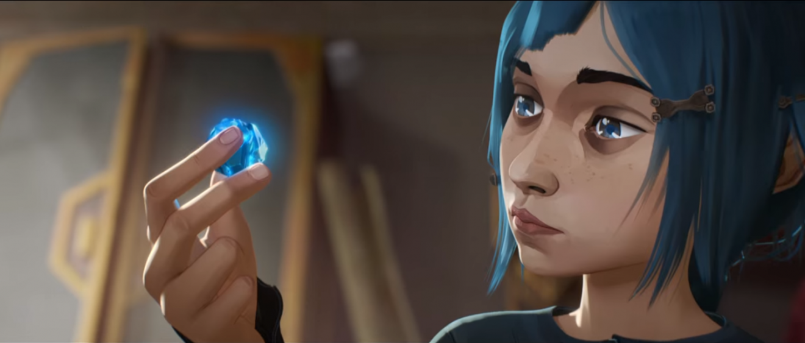
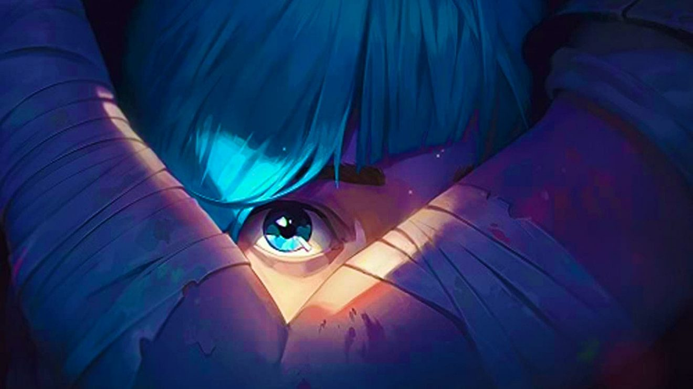
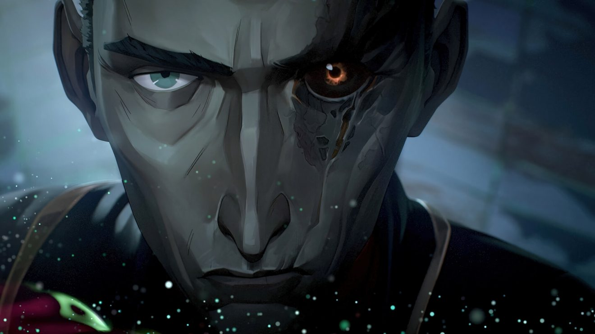
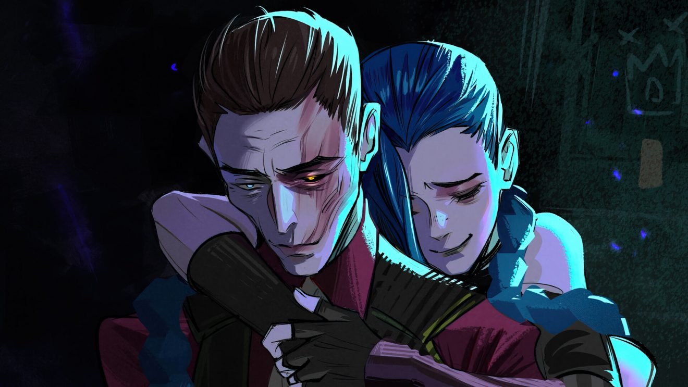
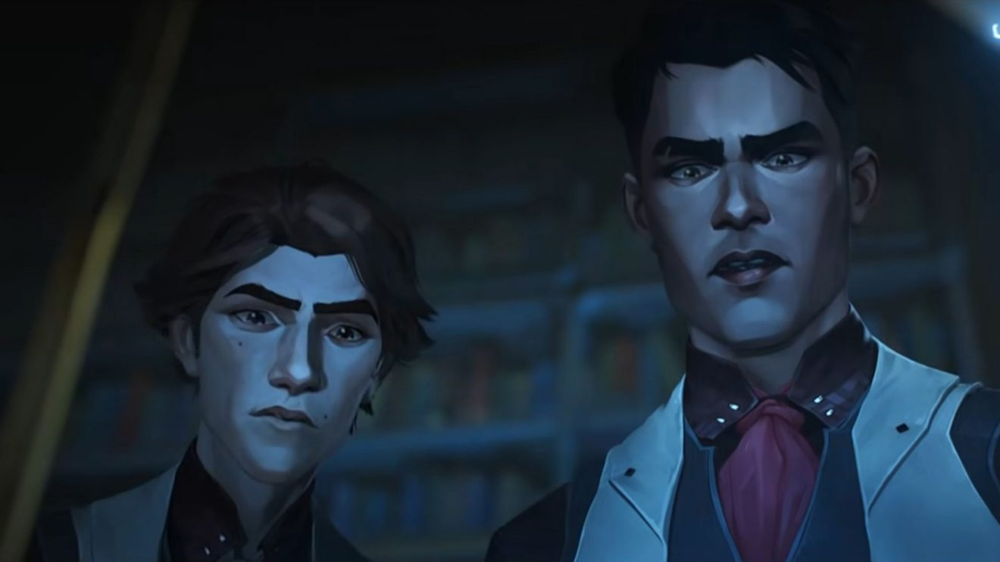
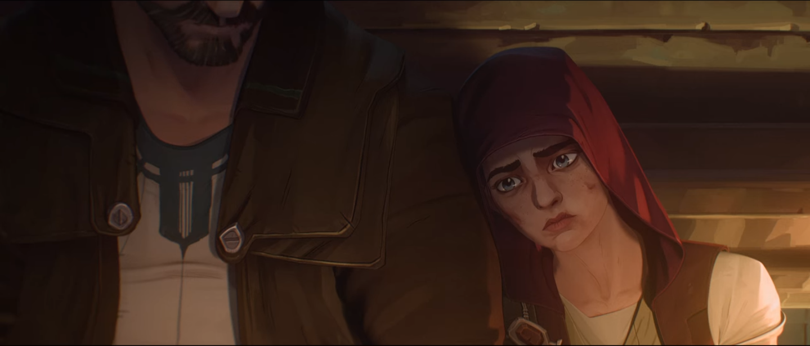
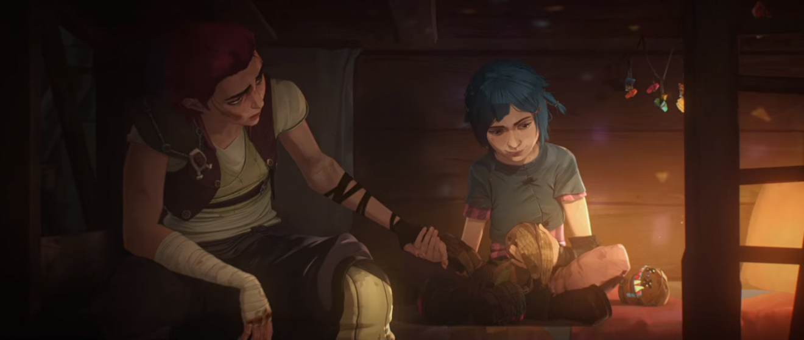
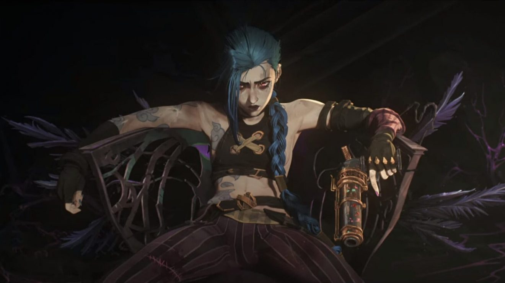

Mọi người có thể xem 9 tập phim Arcane theo đường dẫn này
Đầu tiên là Cốt truyện và Nhân vật của Arcane
Arcane có một cốt truyện đẹp, logic và các tình tiết đan xen cực kỳ thú vị, phải nói là mình cố gắng tìm ra lỗi ‘plot hole’ nhưng không thể tìm thấy luôn. Cảm giác như là đang xem một Game of thormes phiên bản hoạt hình – game vậy đó.
Phim mở đầu bằng khung cảnh tàn cuộc của một cuộc chiến. Khi thành phố giả tưởng có tên Piltover đã cử quân đội đến một nơi gọi là Zaun và tàn phá nơi đây. Gây ra cái chết cho cha mẹ của hai nhân vật chính, chị em Vi và Powder. Chúng ta vẫn chưa biết được lý do và diễn biến thật sự cuộc chiến này, mà chỉ được hình dung đại khái thông qua lời kể của Vander với Vi: Cha mẹ con chết là lỗi của ta.
Tuy nhiên, như các bạn đã biết, Vander và Silco trước đây xem nhau như anh em, cùng chung mục đích trong việc đưa thành phố ngầm không bị Piltover coi thường. Thế nhưng, nếu Vander là một người biết tính toán trước sau thì gã Silco này lại là một kẻ không từ thủ đoạn. Nên ở cảnh mở màn, theo mình đoán, có lẽ đây là cuộc chiến được thế giới ngầm phát động, dưới sự dẫn dắt của chính Silco, tấn công Piltover và bị trả đũa. Mà về sau Vander vì lý do này đã cố gắng tự tay dìm chết Silco và giữ hòa hảo giữa Zaun và Piltover.
Phim đưa chúng ta tiến đến mốc thời gian khi Vi và Powder giờ đây đã lớn. Sau cuộc đột nhập vào nhà của một cư dân có tên là Jayce ở Piltover, Powder vô tình kích hoạt những viên đá phép thuật mà sau này chúng ta được biết với cái tên Công nghệ Hextech – khiến một nửa toàn nhà sụp đổ và công trình nghiên cứu bí mật của Jayce, nhà khoa học này, bại lộ.
Những mắc xích đan xen dẫn dắt người xem kết nối số phận của các nhân vật bắt đầu từ đây. Chúng ta sẽ được nhìn thấy một Vi mạnh mẽ nhưng đâu đó là nỗi khắc khoải về cuộc sống, về vị trí mà cô muốn có trong xã hội nhiễu nhương. Hay một Powder có phần nhút nhát và tự ti khi luôn mặc cảm bản thân là một người vô dụng, và để rồi một bước ngoặc quan trọng xảy ra đã xoay chuyển toàn bộ cuộc đời cô bé.
Những cuộc xung đột chính trị, phân hóa giàu nghèo giữa hai vùng Zaun và Pitover như một đồ thị hình sin, lúc cao trào lúc thoái trào, đem lại những cảm xúc khó tả cho người xem. Nếu ở Piltover là Công nghệ Hextech thì ở Zaun có Shimmer, một vật chất màu hồng bí ẩn. Hai thành phố, hai công nghệ và những nỗi đau.
Ngoài ra, các tuyến nhân vật bổ trợ nhưng cũng được phát triển vô mạnh mẽ và có chiều sâu là những điểm sáng tuyệt vời phải kể đến của Arcane.
Đầu tiên là nhân vật phản diện Silco, ông trùm của thế giới ngầm Zaun. Không khoan nhượng, độc ác và quyết đoán. Silco được xem như một tuyến phản diện nhất-định-phải-có của Arcane. Nhưng đôi khi, phim khiến chúng ta không thể ghét hắn, vì bản chất đằng sau sự độc ác này chính là những nỗi đau về sự phản bội, từ đó đã nung nấu lòng căm thù mù quáng của Silco với Vander và với bất cứ ai cản trở hắn trên con đường tàn phá đế chế quyền lực Piltover.
Cuộc đời vô nghĩa của Silco như được cứu rỗi bởi Powder mà sau này là Jinx. Hai kẻ bị ruồng bỏ, hai kẻ bị phản bội, nhưng liệu rằng chúng ta có thể đổi lỗi cho Vi và Vander được không. Chắc chắn là không. Vì có những tội lỗi chẳng thể phán xét đúng sai, chỉ là chúng ta không thể chống lại sự sắp đặt của số phận mà thôi.
Cái chết của Silco ở cuối phim không khiến người xem thỏa mãn mà chỉ là một day dứt – một ý niệm mình rất thích mỗi khi có bộ phim nào đó làm được điều này. Rốt cuộc, sau bao năm tháng đấu tranh cùng với nỗi hận thù mù quáng đó, điều cuối cùng mà gã Silco này có được chẳng có gì, ngoài tuổi già và một trái tim trống rỗng.
Các tuyến nhân vật ở Piltover chủ yếu tập trung vào Jayce và Viktor, hai chuyên gia hàng đầu trong lĩnh vực Hextech với những câu chuyện riêng của cuộc đời. Những chuyện đã xảy đến và dần biến cả hai đi chệch quỹ đạo ban đầu của mình: Thay vì sử dụng Hextech để cải thiện cuộc sống của người dân thì họ đang dần biến nó thành vũ khí giết người.
Số phận của một số tuyến nhân vật khác như Caitlyn, Mylo, Claggor, Ekko cũng là những nét chấm phá phong phú cho bức tranh toàn cảnh của Arcane.
Riêng về Vander, ở những giây phút cuối của mùa 1 của Arcane, đáng ngạc nhiên là dường ông vẫn còn… sống. Đây sẽ là chi tiết đáng chú ý để phát triển trong Mùa 2, và mình nghĩ nó hoàn toàn hợp lý, vì chỉ có Vander mới có thể hàn gắn lại mối quan hệ của hai chị em Vi và Powder mà thôi.
Những bài học đắt giá đáng suy ngẫm
Ai đó từng nói rằng: Giá trị của một bộ phim không nằm ở độ hoàng tránh của nó, không nằm ở dàn diễn viên xuất chúng mà nằm ở Giá trị nhân văn mà nó mang lại.
Và Arcane thật sự đã làm rất rất tốt điều đó. Trải dài qua các tập phim, rất nhiều những đoạn thoại đầy cảm hứng và giá trị được truyền tải.
“Con là một người có trái tim nhân hậu, đừng bao giờ đánh mất nó. Dù cho thế giới này có khiến con tan vỡ đến đâu. Hãy bảo vệ gia đình này.” - Vander nói với Vi.
"Sự khác biệt khiến em mạnh mẽ. Hãy ghi nhớ điều đó." - Vi
Nếu ở đây có bạn nào là fan của The Witcher thì hẳn những mảng sáng tối bên trong con người cũng được Arcane nương náu. Như câu nói của Silco: Luôn có một con quái vật bên trong mỗi chúng ta.
Có thể nhiều bạn sẽ nghĩ rằng: Chính Silco đã biến Powder thành Jinx. Nhưng không. Chính Vi đã biến Powder thành Jinx, như cô nói thẳng với Vi. Chính cái khoảnh khắc định mệnh khi đó, khi Vi bỏ lại Powder.
Luôn có mặt tốt và xấu bên trong mỗi người và bất cứ ai cũng sẽ thay đổi. Quyền sống như thế nào là do chúng ta lựa chọn. Cuộc đời chẳng bao giờ là màu hồng và ai mà chẳng có những ngày tồi tệ. Hãy cứ sống với lòng nhiệt thành của Jinx (nhưng đừng có over như cô nàng nha) và trái tim nhân hậu của Vi, mình tin chắc các bạn có thể làm được những điều mình muốn.
Ngoài ra, mình xin phép trích thêm một câu nữa mà mình rất thích, khi Viktor động viên Jayce:
"Khi cậu dự định thay đổi thế giới, không cần xin phép ai đâu."
Lời kết:
Sau hơn 10 năm phát triển tựa game esport hàng đầu - League of Legends, kho tàng chất xám của Riot bao gồm truyền thuyết, nhân vật là quá đồ sộ và có lẽ công việc khó khăn của ekip biên kịch sẽ là lồng ghép cốt truyện hợp lý từ nguồn sáng tạo quá dư thừa.
Chưa rõ liệu mùa 2 của Arcane sẽ tiếp tục ở nơi phần đầu tiên đã rời đi hay không tuy nhiên, việc một thông báo sớm như vậy là cho thấy sự quyết tâm của Riot, đồng thời phản ánh cái nhìn tích cực của khán giả cho định dạng vốn là nỗi thất vọng trong nhiều năm.